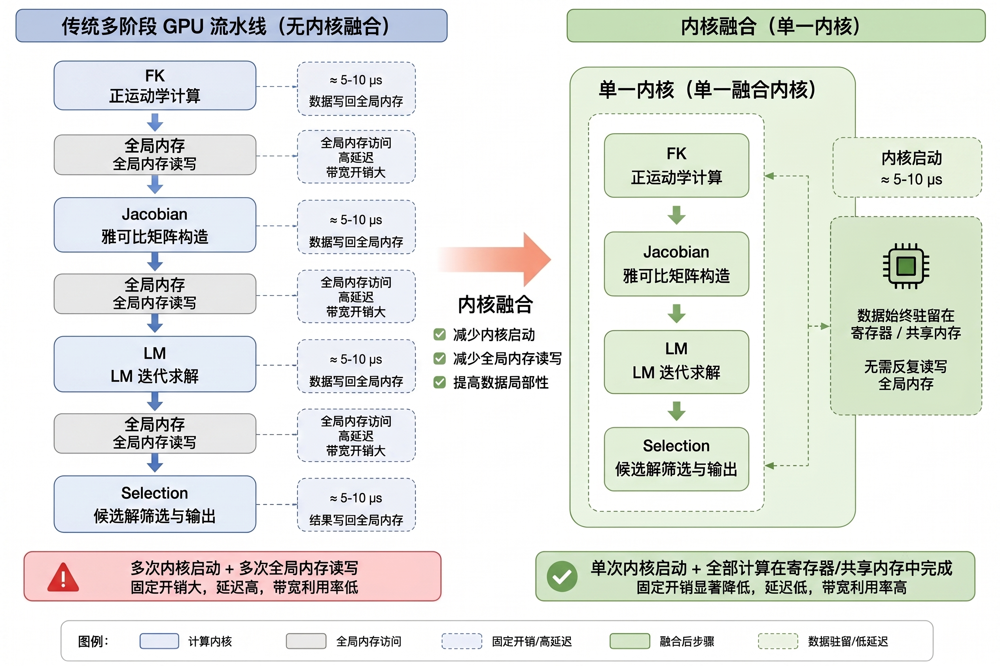
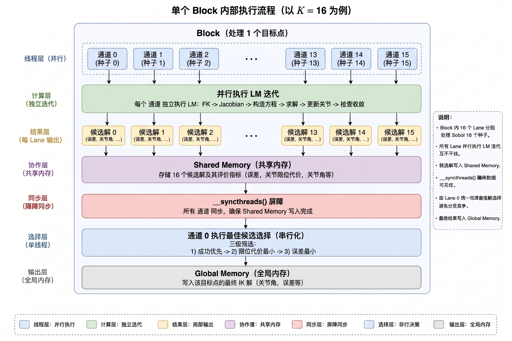
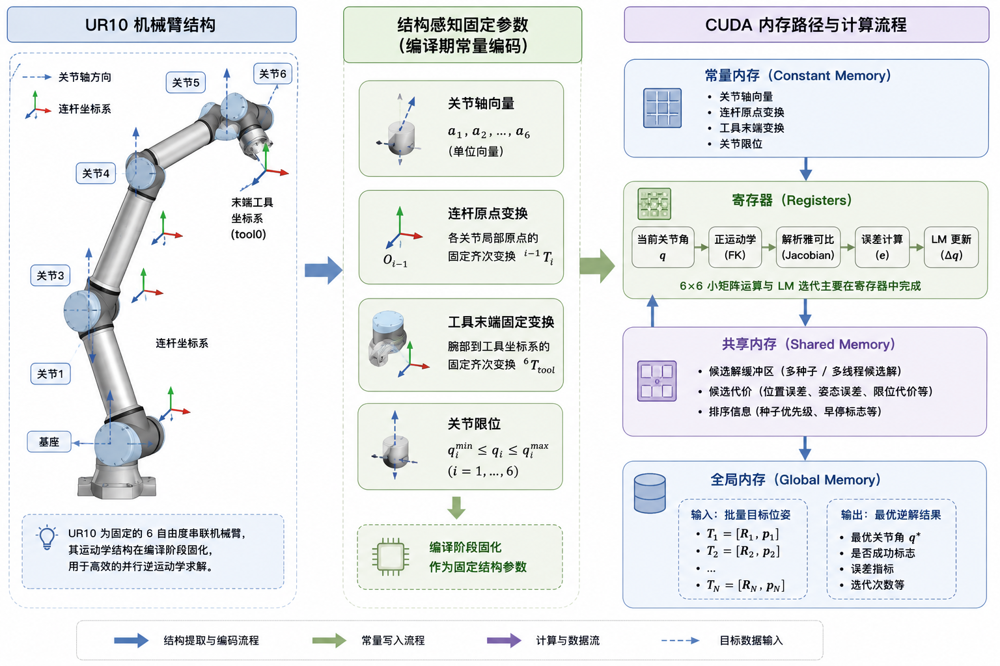
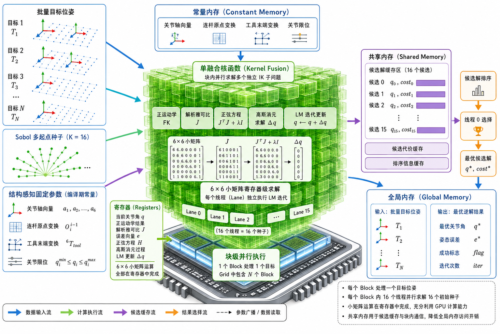
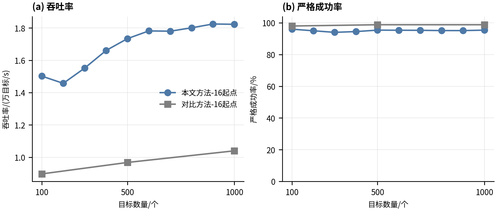
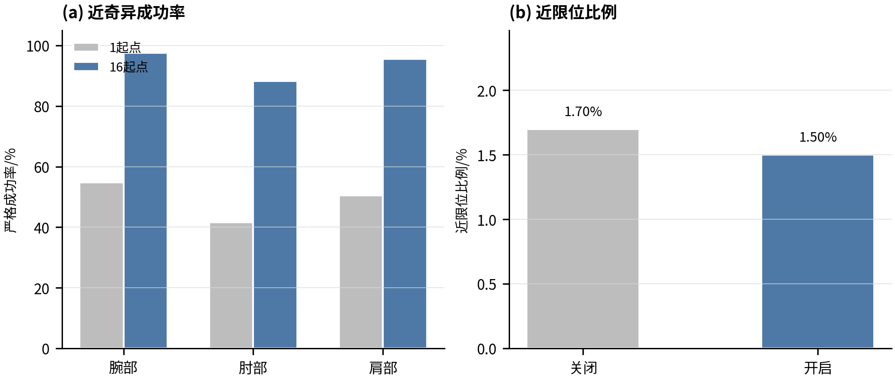

Python · C++ · CUDA — 三种计算范式在批量逆运动学场景下的性能差异
单进程 CPU 执行，NumPy 矩阵运算基于 BLAS 后端。每目标约 150ms，受限于 Python 解释器开销和标量循环。
多线程 CPU 执行，Eigen/Armadillo 使用 SIMD 向量化。编译优化消除解释器开销，但受限于 CPU 核心数。
GPU 大规模并行，单核函数融合消除调度开销。N=1000 时 Strict 成功率 0.954，GPU 流时间严格线性。
| 方法 | N | Strict SR | 吞吐 (t/s) | p95 (mm) |
|---|---|---|---|---|
| CPU-K16 | 100 | 0.960 | 6.33 | 4.38 |
| CPU-K16 | 500 | 0.954 | 6.66 | 4.34 |
| CPU-K16 | 1,000 | 0.954 | 6.74 | 4.56 |
| GPU-K16 (SAKF-IK) | 1,000 | 0.954 | 18,226 | 4.56 |
理解 GPU 并行计算的关键概念：线程层次、内存层次与执行模型
少量强大核心（4–32 核），每核心有独立的大容量缓存和复杂的分支预测器。优化目标：降低单线程延迟。适合复杂控制流和串行任务。
数千个简单核心，按组调度执行相同指令。优化目标：最大化吞吐量。适合数据并行、批量计算任务。
2023–2025 年主要 GPU 加速逆运动学与运动规划相关工作
CUDA 并行化机器人运动生成框架。IK 求解采用 CUDA Graph 多阶段流水线：粒子群初始化 → 并行 L-BFGS 优化 → 碰撞检测。底层依赖 cuBLAS/cuSOLVER。吞吐 37,000+ queries/s（碰撞关闭），30–60× CPU 加速。
Sundaralingam et al., arXiv:2310.17274
GPU 批量混合雅可比坐标下降 IK。两阶段：方向感知贪心 CCD 初始化 → 并行 Jacobian 精修。利用 Block/Warp/Thread 三级并行，在 Franka Panda (7-DOF) 上验证。
Yasutake, Kingston & Plancher, arXiv:2510.07514
基于 JAX + MuJoCo MJX 的可微分 GPU IK。利用 JAX jit 编译、vmap 自动向量化、自动微分。支持碰撞避免约束。无需手写 CUDA kernel。
Domrachev & Nedelchev, github.com/based-robotics/mjinx
GPU 加速批量轨迹优化，用于边缘 MPC。利用 CUDA 批量并行实现 18–21× CPU 加速。pRRTC 进一步在 7–14 DOF 机械臂上实现 GPU 实时运动规划。
Du et al., arXiv:2510.07625
深入分析 cuRobo 架构设计与通用 GPU 线性代数库在小矩阵场景下的结构性缺陷
| 组件 | 技术 |
|---|---|
| 前端 | PyTorch |
| 运动学 Kernel | 自定义 CUDA |
| 线性代数 | cuBLAS + cuSOLVER |
| 碰撞检测 | NVIDIA Warp (BVH) |
| SDF | nvblox |
| Kernel 调度 | CUDA Graphs |
| 场景 | CPU | cuRobo |
|---|---|---|
| 6-DOF IK | 8 ms | 0.3 ms |
| 7-DOF IK | 15 ms | 0.5 ms |
| IK 吞吐 (无碰撞) | — | 37,000+/s |
| 端到端规划 | 1200 ms | 30–45 ms |
cublasGemmBatchedEx 对小矩阵存在 >10 μs/次 固定调用开销| 对比维度 | cuRobo（多内核 + 通用库） | SAKF-IK（单核融合 + 专有求解器） |
|---|---|---|
| 内核函数阶段数 | 多个（FK → Jacobian → GEMM → Solver → Selection） | 1 个（四层融合） |
| 6×6 线性系统求解 | cuBLAS/cuSOLVER 接口（~2–10 μs） | 寄存器级高斯消元（~0.05 μs） |
| 阶段间数据中转 | 全局内存（片外 DRAM） | 片上存储（寄存器/共享内存/常量缓存） |
| 结构参数存储 | 全局内存（~200–800 cycles） | 常量内存（~1 cycle 广播） |
| 全局内存写入量 | N×K×16（全部候选）+ 选择结果 | N×18（仅最优解），~14× 减少 |
| 调度开销占比 | 显著（多次 kernel launch 累加） | < 0.3%（启动次数恒为 1） |
Structure-Aware Kernel Fusion for Inverse Kinematics — 硬件-算法协同设计的方法论实践

SAKF-IK 的核心设计思想是 硬件-算法协同设计（hardware-algorithm co-design）：不是将已有 CPU 算法移植至 GPU，也不是在 cuBLAS/cuSOLVER 之上封装调用，而是将 CUDA 编程模型的内存层次和线程层次作为第一等设计要素，构建一个四层全部驻留于单个 GPU 内核函数内的系统架构。
UR10 结构参数（~1.4 KB）预编译为 C++ 头文件 → 启动时一次性上传至 __constant__ 内存 → 所有 Block 以 ~1 cycle 广播访问
单次 6 段遍历同步输出末端位姿 + 关节世界位置 + 关节世界转轴 → 6 次叉积组装 6×6 解析雅可比
正规方程 HΔq = -g 的 6×6 求解全部在寄存器中完成（~216 标量运算，~0.05 μs）— 替代 cuBLAS/cuSOLVER 的 ~2–10 μs 接口调用
16 候选解暂存共享内存 → __syncthreads() 同步 → Lane 0 三级层次化选择 → 最优解写回全局内存
将 UR10 机械臂的运动学结构参数从 URDF 模型预编译为 C++ 头文件常量，在程序启动时一次性上传至 GPU __constant__ 内存空间。
| 常量符号 | 内容 | 数据量 |
|---|---|---|
c_segment_origins[96] | 6 个关节段固定 origin 变换矩阵（4×4 齐次矩阵/段） | 96 doubles |
c_segment_axes[18] | 6 个关节旋转轴单位向量（UR10 全部为 Z 轴） | 18 doubles |
c_T_wrist3_to_tcp[16] | 腕部第 3 关节至 tool0 固定变换 | 16 doubles |
c_joint_limits[12] | 6 个关节的限位角度 [min, max] | 12 doubles |
c_weight_schedule[24] | 位置/旋转误差权重 | 24 doubles |
c_lambda_params[4] | LM 阻尼参数 | 4 doubles |
// 结构参数上传（程序启动时仅执行一次）
cudaError_t upload_constants() {
cudaMemcpyToSymbol(c_segment_origins, k_origins, sizeof(k_origins));
cudaMemcpyToSymbol(c_segment_axes, k_axes, sizeof(k_axes));
cudaMemcpyToSymbol(c_T_wrist3_to_tcp, k_T_wrist3_to_tcp, sizeof(k_T_wrist3_to_tcp));
cudaMemcpyToSymbol(c_joint_limits, k_joint_limits, sizeof(k_joint_limits));
cudaMemcpyToSymbol(c_weight_schedule, k_weights, sizeof(k_weights));
cudaMemcpyToSymbol(c_lambda_params, k_lambda_params, sizeof(k_lambda_params));
return cudaSuccess;
}这是 SAKF-IK 最核心的结构创新之一。传统方法中，正运动学仅输出末端位姿，雅可比矩阵需通过有限差分（6 关节 × 2 次扰动 = 12 次额外 FK）或自动微分独立计算。SAKF-IK 设计了融合 FK 函数 fk_with_frames_v4()，在单次 6 段遍历中同步输出三个层次的几何信息，使雅可比组装降格为"正运动学后处理"——仅需 6 次叉积运算。
__device__ __forceinline__ void fk_with_frames_v4(
const double* q, // 输入：6 维关节角
double* T_tip, // 输出：末端 tool0 位姿 (4×4)
double* p_joint, // 输出：6 个关节世界位置 (6×3)
double* z_joint) { // 输出：6 个关节世界转轴方向 (6×3)
// 初始化为单位矩阵
for (int i = 0; i < 16; ++i) T_tip[i] = (i % 5 == 0) ? 1.0 : 0.0;
for (int seg = 0; seg < 6; ++seg) {
// 步骤 1：施加连杆偏移矩阵（从常量内存读取）
mat44_mul(T_tip, &c_segment_origins[seg * 16], T_tmp);
for (int i = 0; i < 16; ++i) T_tip[i] = T_tmp[i];
// 步骤 2：记录关节世界位置（累积变换的平移分量）
p_joint[seg*3+0] = T_tip[3]; // X
p_joint[seg*3+1] = T_tip[7]; // Y
p_joint[seg*3+2] = T_tip[11]; // Z
// 步骤 3：计算关节世界转轴方向
// z_i = R_accumulated(3x3) · a_i(local)
// 局部转轴经累积旋转矩阵变换至世界坐标系
z_joint[seg*3+0] = T_tip[0]*c_segment_axes[seg*3+0]
+ T_tip[1]*c_segment_axes[seg*3+1]
+ T_tip[2]*c_segment_axes[seg*3+2];
// ... (Y, Z 分量同理)
// 步骤 4：施加绕关节轴旋转（Rodrigues 公式）
build_rotation_matrix_v4(
c_segment_axes[seg*3+0], // ax (UR10: 全 Z 轴)
c_segment_axes[seg*3+1], // ay
c_segment_axes[seg*3+2], // az
q[c_q_index[seg]], // 关节角
R);
mat44_mul(T_tip, R, T_tmp);
for (int i = 0; i < 16; ++i) T_tip[i] = T_tmp[i];
}
// 步骤 5：末端施加 wrist3 → tool0 固定变换
mat44_mul(T_tip, c_T_wrist3_to_tcp, T_tmp);
for (int i = 0; i < 16; ++i) T_tip[i] = T_tmp[i];
}__device__ __forceinline__ void analytical_jacobian_v4(
const double* T_ee, // 末端位姿
const double* p_joint, // 6 关节世界位置
const double* z_joint, // 6 关节世界转轴
double* J) { // 输出：6×6 雅可比矩阵
const double pe[3] = {T_ee[3], T_ee[7], T_ee[11]}; // 末端 TCP 位置
for (int j = 0; j < 6; ++j) {
double zx = z_joint[j*3+0], zy = z_joint[j*3+1], zz = z_joint[j*3+2];
double rx = pe[0] - p_joint[j*3+0]; // 末端到关节 j 的向量
double ry = pe[1] - p_joint[j*3+1];
double rz = pe[2] - p_joint[j*3+2];
// 上三行：旋转分量 = z_j × (p_ee - p_j) ← 叉积
J[0*6+j] = zy * rz - zz * ry;
J[1*6+j] = zz * rx - zx * rz;
J[2*6+j] = zx * ry - zy * rx;
// 下三行：平移分量 = z_j（转轴方向）
J[3*6+j] = zx;
J[4*6+j] = zy;
J[5*6+j] = zz;
}
}这是 SAKF-IK 克服"通用大矩阵库在小矩阵场景下范式级错配"的核心技术手段。LM 迭代每步需解的正规方程 6×6 线性系统，全部在 GPU 寄存器/局部数组中通过手写高斯消元直接求解——以"专器专用"替代通用大矩阵库的"大矩阵接口"。
// 全部 42 个 double 中间变量保持在 GPU 寄存器中
// 不调用 cuBLAS、cuSOLVER 或任何外部库！
__device__ __forceinline__ void solve_6x6_gauss_v4(
double* A, double* b, double* x) {
double M[6][7]; // 增广矩阵 [H | rhs]，全部在寄存器中！
for (int r = 0; r < 6; ++r) {
for (int c = 0; c < 6; ++c) M[r][c] = A[r * 6 + c];
M[r][6] = b[r];
}
// === 前向消元（含部分选主元） ===
for (int k = 0; k < 6; ++k) {
// 部分选主元：在当前列 k 行范围内找绝对值最大的行
int piv = k;
double best = fabs(M[k][k]);
for (int r = k + 1; r < 6; ++r) {
double v = fabs(M[r][k]);
if (v > best) { best = v; piv = r; }
}
// 行交换
if (piv != k) {
for (int c = k; c < 7; ++c) {
double tmp = M[k][c]; M[k][c] = M[piv][c]; M[piv][c] = tmp;
}
}
// 防零保护：对角元过小则以 ±1e-14 替代
double diag = M[k][k];
if (fabs(diag) < 1e-14) diag = (diag < 0.0 ? -1e-14 : 1e-14);
// 消去下三角
for (int r = k + 1; r < 6; ++r) {
double f = M[r][k] / diag;
for (int c = k; c < 7; ++c) M[r][c] -= f * M[k][c];
}
}
// === 回代 ===
for (int r = 5; r >= 0; --r) {
double sum = M[r][6];
for (int c = r + 1; c < 6; ++c) sum -= M[r][c] * x[c];
double diag = M[r][r];
if (fabs(diag) < 1e-14) diag = (diag < 0.0 ? -1e-14 : 1e-14);
x[r] = sum / diag; // Δq_r 求解完成
}
}// 阻尼自适应（无回滚策略）
lambda *= (loss_new < loss_old) ? 0.5 : 2.0; // ↓ or ↑
lambda = cuda_clamp(lambda, 1e-6, 0.5); // 范围约束
// 总是接受试探解（无回滚）→ 降低 GPU 控制流复杂度
// 关节限位二次障碍函数
// Phi = Σ_j max(0, m-(q_j - q_min))² + max(0, m-(q_max - q_j))²
// 安全裕度 m = 0.087 rad ≈ 5°
// 权重 w_limit = 0.03（辅助安全裕度，不主导主 IK 收敛方向）
// 解析梯度直接叠加至正规方程右端项
grad[j] += -2.0 * (kLimitMargin - (q[j] - lo)); // 下限方向
grad[j] += 2.0 * (kLimitMargin - (hi - q[j])); // 上限方向
<<<dim3(N, 1, 1), dim3(32, 1, 1)>>>__global__ void ik_lm_multiseed_v4_block_target_kernel(
const double* targets, const double* seeds,
double* best, int N, int K, int max_iter,
int limit_gradient_mode, int precision_mode,
int fallback_mode, int* fallback_count) {
int target_id = blockIdx.x; // 目标索引 = Block ID
int seed_id = threadIdx.x; // 种子索引 = Lane ID
// 共享内存候选缓冲：16 候选 × 16 doubles = ~2 KB
__shared__ double s_cand[16 * kCandidateStride];
// === 阶段 1：并行求解（Lane 0–15） ===
if (seed_id < 16) {
double* c = s_cand + seed_id * kCandidateStride;
if (seed_id < K) {
solve_candidate_v4( // 完整 LM 迭代求解
targets + target_id * 16,
seeds + (target_id * K + seed_id) * 6,
max_iter, limit_gradient_mode, precision_mode, c);
}
}
__syncthreads(); // 等待全部 16 lane 候选写入完成
// === 阶段 2：层次化选择（仅 Lane 0） ===
if (threadIdx.x == 0) {
int best_k = 0, best_rank = 4, best_near = 2;
double best_pose = 1e300;
for (int k = 0; k < K && k < 16; ++k) {
const double* c = s_cand + k * kCandidateStride;
// 四级优先级排序
if (candidate_better_v4(c, k,
best_rank, best_near, best_pose, best_k)) {
best_rank = candidate_rank_v4(c); // ① 成功等级
best_near = c[15] > 0.5 ? 1 : 0; // ② 近限位标志
best_pose = c[8]; // ③ 位姿代价
best_k = k; // ④ seed_id
}
}
// 最优候选从共享内存写回全局内存
write_best_from_candidate_v4(
s_cand + best_k * kCandidateStride, best_k,
best + target_id * kBestStride);
}
}// 候选 c_a 优于 c_b 当且仅当满足以下任一条件：
__device__ __forceinline__ bool candidate_better_v4(
const double* c, int seed_id,
int best_rank, int best_near, double best_pose, int best_seed) {
int rank = candidate_rank_v4(c); // Strict=0 > Medium=1 > Loose=2 > Fail=3
int near = c[15] > 0.5 ? 1 : 0; // 0 = 非近限位 > 1 = 近限位
double pose = c[8]; // 位姿代价
// 优先级 1: 成功等级（低优）
return rank < best_rank ||
// 优先级 2: 近限位状态（非近限位优）
(rank == best_rank && near < best_near) ||
// 优先级 3: 位姿代价（低优）
(rank == best_rank && near == best_near && pose < best_pose) ||
// 优先级 4: 种子编号（低优，确定性平局打破）
(rank == best_rank && near == best_near && pose == best_pose
&& seed_id < best_seed);
}

| N | GPU 时间 (ms) | 吞吐量 (t/s) | Strict SR | p95 (mm) | 平均迭代 |
|---|---|---|---|---|---|
| 100 | 6.658 | 15,019 | 0.960 | 4.38 | 21.0 |
| 300 | 19.334 | 15,517 | 0.940 | 27.04 | 20.0 |
| 500 | 28.837 | 17,339 | 0.954 | 4.34 | 20.0 |
| 700 | 39.329 | 17,799 | 0.953 | 4.78 | 19.5 |
| 1,000 | 54.868 | 18,226 | 0.954 | 4.56 | 19.0 |
消融实验 · 公平对比 · 帕累托前沿 · 微架构瓶颈
| N | 方法 | K | Strict SR | 吞吐 (×10⁴ t/s) | 全样本 p95 (mm) | 成功 p95 (mm) |
|---|---|---|---|---|---|---|
| 1,000 | SAKF-IK | 16 | 0.954 | 1.823 | 4.56 | 2.55 |
| 1,000 | cuRobo-Graph | 16 | 0.988 | 1.040 | 0.88 | 0.42 |
| 1,000 | SAKF-IK | 1 | 0.522 | 2.786 | 685.01 | 4.61 |
| 1,000 | cuRobo-Graph | 1 | 0.840 | 7.262 | 88.67 | 0.28 |

| N | K=16 SR | K=1 SR | K=16 p95 (mm) | K=1 p95 (mm) |
|---|---|---|---|---|
| 100 | 0.960 | 0.450 | 4.38 | 642.2 |
| 500 | 0.954 | 0.502 | 4.34 | 686.2 |
| 1,000 | 0.954 | 0.522 | 4.56 | 685.0 |
| 寄存器限制 | 寄存器/线程 | 溢出存储 |
|---|---|---|
| 无限制 | 194 | 0 B |
| 160 | 160 | 216 B |
| 128 | 128 | 568 B |
RTX 4060: 65,536 寄存器/SM，理论占用率 ~44%。中等占用率表明瓶颈不是全局内存带宽。
| 指标 | 实测值 |
|---|---|
| Warp Stall Long Scoreboard | 83.2% |
| Issue Slot Utilization | 2.32% |
| Compute (SM) Throughput | 84.2% |
| Memory Throughput | 3.71% |
Memory Throughput 仅 3.71% 确认非访存瓶颈。瓶颈来自 FP64 小矩阵求解、三角函数和标量寄存器操作的长延迟依赖。

SAKF-IK 的核心贡献与未来方向
K=16 个 Sobol 低差异种子、解析雅可比、迭代求解和块内候选选择融合于单个目标块核函数。内核函数启动次数恒为 1，与种子数无关。严格成功率从 K=1 的 0.522 提升至 K=16 的 0.954。
单次前向传播同步输出末端位姿、关节世界位置和关节世界转轴方向三个层次的几何量。解析雅可比由 6 次叉积组装，每迭代 FK 调用从有限差分的多次扰动降至 1 次结构化评估。
以"专器专用"替代通用大矩阵库——全部 42 个 double 中间变量保持在寄存器中（~216 标量运算，~0.05 μs），消除 cuBLAS/cuSOLVER 的 ~2–10 μs 接口调度开销（40–200× 加速）。
同等 K=16 种子下，cuRobo SR 0.988 位于高精度端，SAKF-IK SR 0.954 满足工程阈值且吞吐量为其 1.75 倍。三方对比确立了本方法在质量-吞吐量帕累托前沿上的"满足 Strict 阈值前提下的吞吐优先"拐点位置。
腕部和肩部奇异下保持较高成功率；肘部奇异 SR 降至 0.883；限位正则主要作为安全裕度约束而非收敛加速手段。轨迹连续性需进一步研究。
| 技术指标 | SAKF-IK（四层单核融合） | cuRobo-Graph-K16（多内核+通用库） |
|---|---|---|
| 系统架构 | 四层单核函数融合 | 多内核函数 + 通用库调用 |
| Strict 成功率 | 0.954 | 0.988 |
| 原始吞吐量 (t/s) | 18,226 | 10,400 |
| 6×6 线性系统求解 | 寄存器级高斯消元 (~0.05 μs) | cuBLAS/cuSOLVER (~2–10 μs) |
| 层间数据中转 | 片上存储（寄存器/共享内存/常量缓存） | 全局内存（片外 DRAM） |
| 全局内存写入量 | N×18 doubles（仅最优解） | N×K×16 + N×18 doubles |
| 结构参数存储 | 常量内存（~1 cycle 广播） | 全局内存（~200–800 cycles） |
| 调度开销占比 | < 0.3% | 显著（多次 kernel launch） |
| GPU 通用库依赖 | 零依赖 | 依赖 cuBLAS/cuSOLVER |
[1] Siciliano B, Sciavicco L, Villani L, et al. Robotics: Modelling, Planning and Control. Springer, 2010.
[2] Lynch K M, Park F C. Modern Robotics. Cambridge University Press, 2017.
[3] Sundaralingam B, et al. cuRobo: Parallelized Collision-Free Robot Motion Generation. arXiv:2310.17274, 2023.
[4] Yasutake C, Kingston Z, Plancher B. HJCD-IK: GPU-Accelerated Inverse Kinematics. arXiv:2510.07514, 2025.
[5] Domrachev I, Nedelchev S. mjinx: Differentiable GPU-Accelerated IK in JAX. 2025.
[6] Thomason W, Kingston Z, Kavraki L E. Motions in Microseconds via Vectorized Sampling-Based Planning. ICRA 2024.
[7] NVIDIA. CUDA C++ Programming Guide. docs.nvidia.com/cuda/, 2026.
[8] Levenberg K. A Method for the Solution of Certain Non-Linear Problems in Least Squares. Q. Appl. Math., 1944.
[9] Marquardt D W. An Algorithm for Least-Squares Estimation of Nonlinear Parameters. SIAM, 1963.
[10] Sobol I M. On the Distribution of Points in a Cube. USSR Comput. Math. Math. Phys., 1967.
[11] NVIDIA. CUDA C++ Best Practices Guide. docs.nvidia.com/cuda/, 2026.
[12] Aboelnasr M I M. ManipulaPy: GPU-Accelerated Python Framework. JOSS, 2025.
[13] Du A, et al. GATO: GPU-Accelerated Batched Trajectory Optimization. arXiv:2510.07625, 2025.
[14] Hsiao Y S, et al. VaPr: Variable-Precision Tensors to Accelerate Robot Motion Planning. IROS 2023.